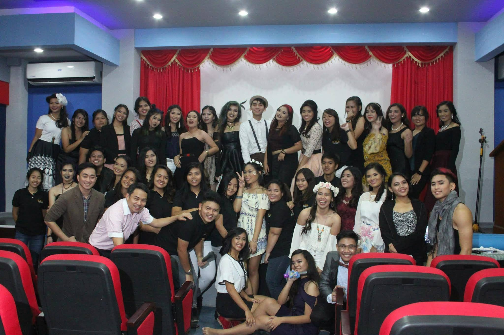
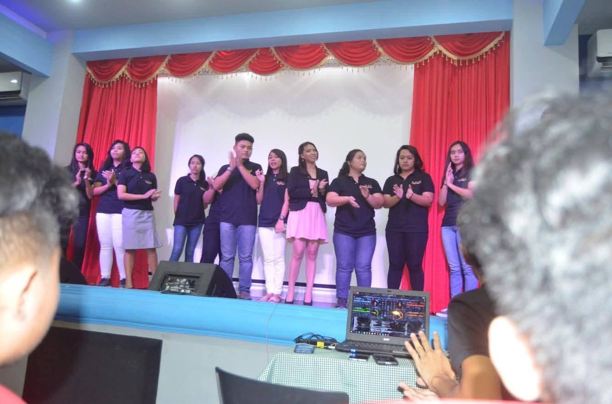

Reflections · Education & Development · Case
Staging Sustainable Fashion
A Senior High School Principles of Marketing project in which I organized and staged a fashion show centered on sustainable fashion and locally produced cosmetics.
Engagement record
The experience at a glance.
- Academic context
- Principles of Marketing · Senior High School
- Engagement
- Student-organized fashion show
- Role
- Organizer
- Format
- Live fashion show and product presentation
- Focus
- Sustainable fashion and locally produced cosmetics
- Contribution
- Event organization and staging
Why this case matters
The marketing lesson became something we had to build and present in front of an audience.
This project came from Principles of Marketing during Senior High School. Instead of keeping the work inside a written requirement, I organized and staged a fashion show around sustainable fashion and locally produced cosmetics.
The event turned the subject into a live presentation. Fashion, cosmetics, staging, and the way products were presented all became part of the same marketing exercise.
Documentary record
A classroom project staged as a live event.
Photographs from the Senior High School fashion show organized for Principles of Marketing.


From class to production
Organizing the show meant turning a marketing theme into an actual event.
The project brought together two product stories: sustainable fashion and locally produced cosmetics. The fashion show provided a format in which those ideas could be presented through a coordinated live experience rather than discussed only in theory.
My role was to organize and stage the show. That meant carrying the project from the academic requirement into the event itself and making sure the presentation could happen in front of an audience.
Applied marketing
Products are not only described. They are also framed, presented, and experienced.
The project made marketing tangible. Sustainable fashion supplied the clothing focus, while locally produced cosmetics connected the presentation to products made closer to home.
Staging the event showed how a marketing idea can move from a classroom concept into a public presentation where product, theme, and audience experience meet.
Education & Development
Return to the education record.
Explore the experiences where classroom learning became something applied, organized, and carried into practice.
Education & Development →